Workflow，Agent，Tools 这三个的概念和区别介绍一下？
👔面试官：Workflow、Agent、Tools 这三个概念说一下，区别是什么？
🙋♂️我：Tools 是工具函数，Agent 是能调工具的智能体，Workflow 是把多个 Agent 串起来的流程，三者是从小到大的关系。
👔面试官：Workflow 是「多个 Agent 串联」？Workflow 里的节点必须是 Agent 吗？LLM 能不能直接当节点？
🙋♂️我：也可以，LLM 直接做节点，比如做意图分类，那就不算 Agent 了……
👔面试官：对，Workflow 的节点可以是 LLM、Agent 或 Tools，关键不是节点是什么，而是谁来决定「下一步去哪」，你明白这句话什么意思吗？
🙋♂️我：就是说流程走向不一样？Workflow 是固定的，Agent 是动态的？
👔面试官：对了一半。Tools 有没有决策能力？三者在「谁做决策」这个维度上各自是什么情况，你来说说。
被问懵了吧，其实三者最核心的区分角度就一个：谁来做「下一步该干什么」这个决策。
💡 简要回答
我理解这三个概念是粒度从小到大的三层结构。
Tools 是最小的能力单元，就是封装好的可调用函数，比如搜索、执行代码、发邮件，它只负责「执行」，本身没有任何决策能力。
Agent 是一个完整的决策系统，内部用 LLM 做大脑，自己判断什么时候调哪个 Tool、要不要继续、什么时候结束，是主动的。
Workflow 是更上层的编排框架，把 Agent、LLM、Tools 组织成一条确定性流程，每个节点做什么、按什么顺序流转都是开发者事先写死的。
三者最核心的区别就一句话：Tools 不做决策只执行，Agent 自己做决策，Workflow 是开发者替所有节点把决策提前写好。
📝 详细解析
要理解这三个概念，得先搞清楚一件事：它们根本不是同一维度的东西，而是粒度不同、可以相互嵌套的三层结构。 很多文章把它们并排列出来对比，容易让人误以为是三选一的关系，其实不是。你在做实际项目的时候，三者通常同时存在，只是扮演不同的角色。
我们按从小到大的粒度，一层一层讲清楚。
第一层：Tools，最小的能力积木
Tools 是整个体系里最简单、最底层的概念，它本质上是一个「按特定格式暴露给 LLM 的函数」：普通函数是给程序员调用的，Tool 是给 LLM 调用的，所以必须给它配一份 LLM 看得懂的 schema（名字、描述、参数类型），否则 LLM 不知道它存在、也不知道怎么用。除了这层 schema 包装，它和普通函数没有本质区别，有明确的输入参数、明确的输出结果。
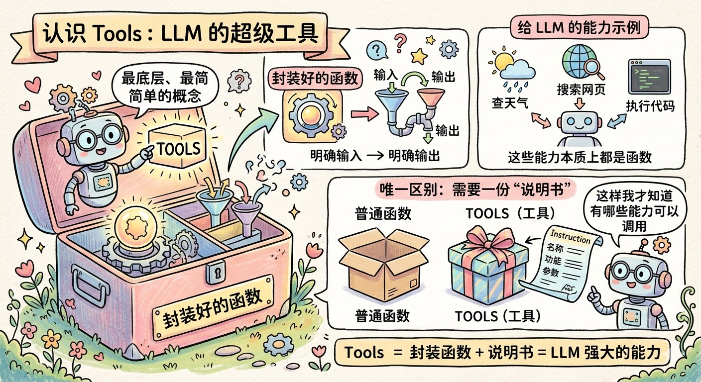
你给 LLM 配备的每一个能力，比如「查天气」「搜索网页」「执行 Python 代码」「往数据库写一条记录」，本质上都是一个函数。Tools 和普通函数唯一的区别是：你需要额外写一份「说明书」告诉 LLM 这个工具叫什么名字、能做什么事、需要传哪些参数，这样 LLM 才知道自己有哪些能力可以调用。
来看一个最直观的例子：
# 定义两个工具，注意观察：这里只有「说明书」，没有任何决策逻辑
# Tools 根本不知道自己「应该」在什么时候被用，它只负责「被调用时干什么」
tools = [
{
"name": "web_search",
"description": "在互联网上搜索信息，适合查询实时数据或不确定的知识",
"parameters": {
"type": "object",
"properties": {
# 参数说明清晰，LLM 看到这个描述就知道该填什么
"query": {"type": "string", "description": "搜索关键词，越具体越好"}
},
"required": ["query"]
}
},
{
"name": "send_email",
"description": "向指定邮箱发送一封邮件",
"parameters": {
"type": "object",
"properties": {
"to": {"type": "string", "description": "收件人邮箱地址"},
"subject": {"type": "string", "description": "邮件主题"},
"body": {"type": "string", "description": "邮件正文内容"}
},
"required": ["to", "subject", "body"]
}
}
]
# 工具的实际执行逻辑单独写，和「说明书」是分开的
def execute_web_search(query: str) -> str:
# 这里才是真正发出 HTTP 请求去搜索的代码
...
def execute_send_email(to: str, subject: str, body: str) -> str:
# 这里才是真正调用邮件 API 发送邮件的代码
...
注意一个很关键的设计：工具本身没有任何决策能力，它甚至不知道自己「应该」在什么时候被使用。 这不是什么设计缺陷，而是故意的，Tools 的使命就是把一个具体能力封装好、随时待命，至于什么时候该用它，那是别人的事。
你可以把 Tools 理解成瑞士军刀上的每一个刀片：折叠刀、开瓶器、螺丝刀，每个刀片都有自己擅长的事，但刀片本身不会说「现在应该把我翻出来」。决定拿哪个刀片的，是拿着刀的那只手。 这只手，就是我们接下来要说的 Agent。
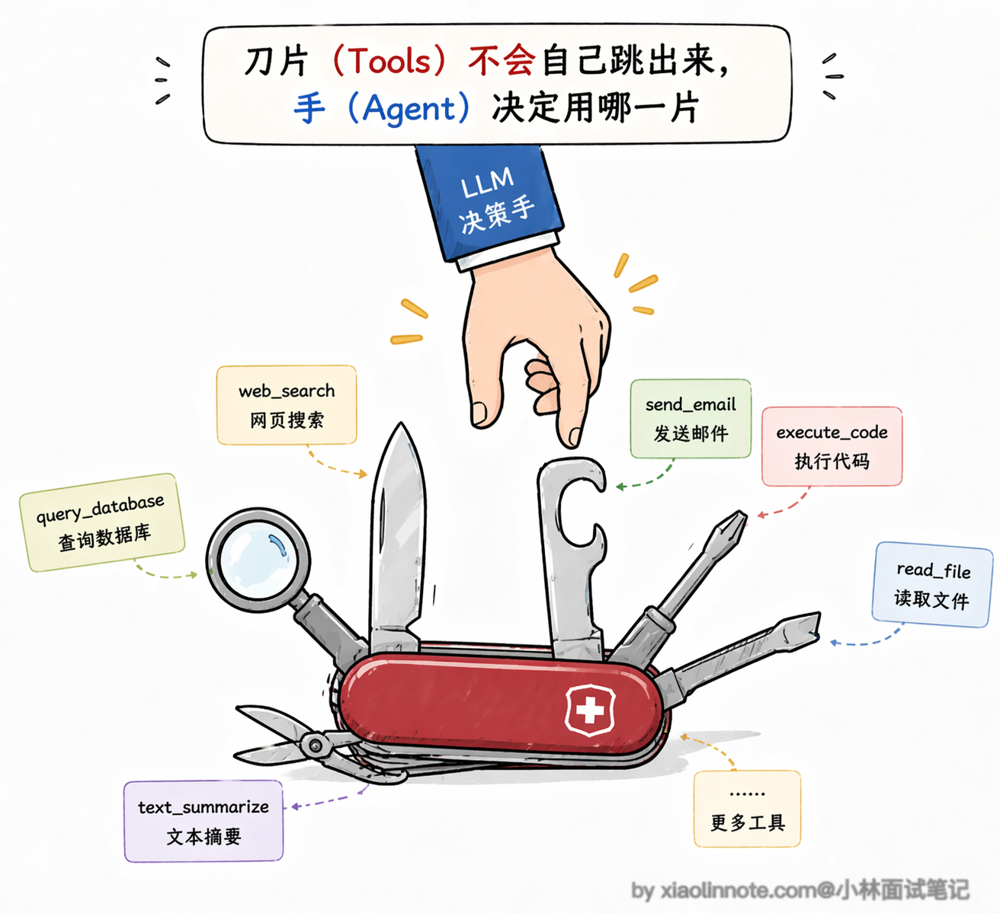
说到工具，还有一个非常重要的工程话题：工具该怎么设计才能让 LLM 用好？
这个问题看似简单，但实际上很多 Agent 系统表现不好，根源不是 LLM 不行，而是工具设计有问题。好的工具设计有几个核心原则。
- 首先是「职责单一」，一个工具只做一件事，不要把「查天气 + 发邮件」混在一个工具里，因为 LLM 在判断该不该调用一个工具时，是根据工具描述来的，如果一个工具干的事太杂，模型就很难精确判断什么时候该用它。
- 其次是「描述要精确」，这一点的重要性怎么强调都不过分，模型完全靠你写的 description 来理解这个工具能做什么。如果描述写得含糊，比如只写「查询数据」，模型就可能在不该用的时候去调它；但如果你写成「查询公司内部销售数据库，支持按日期和产品类别筛选，返回销售额和订单数」，模型就能精确判断什么场景该用它。
- 第三是「错误信息要清晰」，工具执行失败的时候，返回给 LLM 的错误信息必须是它能「看懂」的，比如「参数 city 不能为空」就比「Error code 400」好得多，因为前者能帮助 LLM 自己修正参数重试，后者它完全不知道该怎么处理。第四是「参数设计要简洁」，能少传的参数就不传，能有默认值的就给默认值，因为 LLM 填的参数越多，出错的概率就越大。
另外还有一个行业趋势值得关注。随着工具越来越多，怎么管理和发现工具本身也变成了一个工程问题。
Anthropic 在 2024 年底提出了 MCP（Model Context Protocol），它的思路是把工具的注册、描述、调用做成一套标准化协议，这样不同的 Agent 框架和不同的工具提供方就能互通了，不用每接一个新工具就写一套适配代码。你可以把 MCP 理解成工具世界的「USB 接口」，只要工具按这个标准暴露自己的能力，任何支持 MCP 的 Agent 都能直接调用。
第二层：Agent，拿着工具自己做决定的人
理解了 Tools 之后，Agent 就很好懂了。Agent 就是那个「拿着工具、自己决定用哪个」的角色。
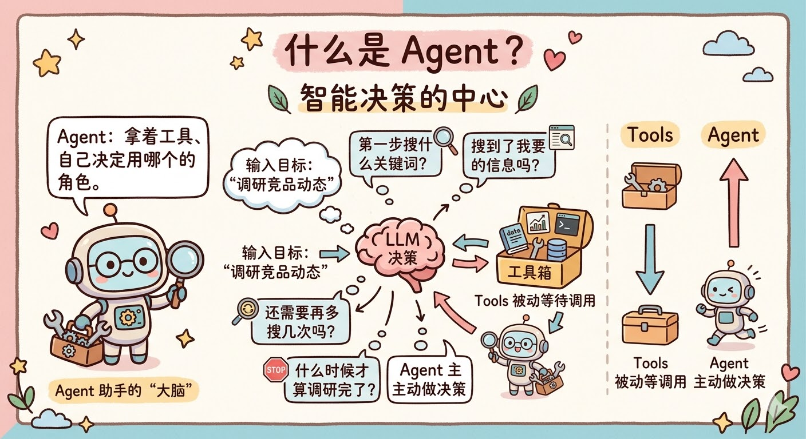
你给 Agent 一个目标，比如「帮我调研一下最近竞品的动态」，它不会直接给你一个答案，而是开始自己思考：我要完成这个目标，第一步应该搜索什么关键词？搜索结果里有没有我需要的信息？需不需要再多搜几次？什么时候才算调研完了？
这一系列「要不要、用哪个、够不够、停不停」的判断，全部由 Agent 内部的 LLM 做决策。这就是 Agent 和 Tools 最本质的区别：Tools 被动等待调用，Agent 主动做决策。
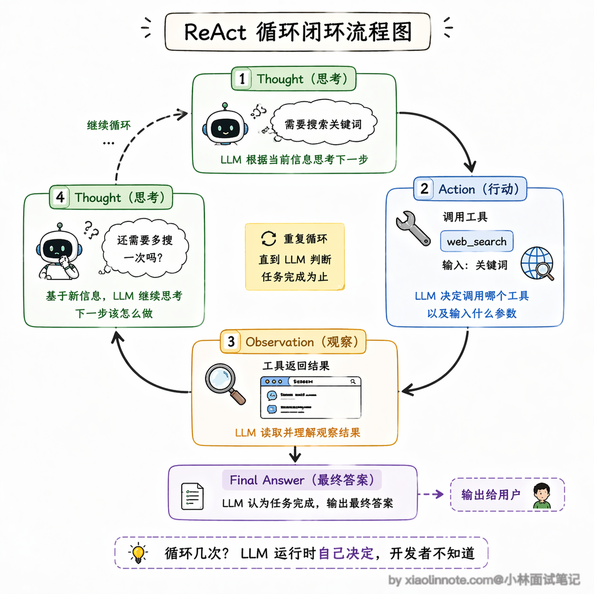
Agent 的运行方式是一个反复循环的过程：想清楚（Thought）-> 行动（Action）-> 看结果（Observation）-> 再想清楚 -> 再行动…… 直到 LLM 判断任务完成为止，这个循环才结束。
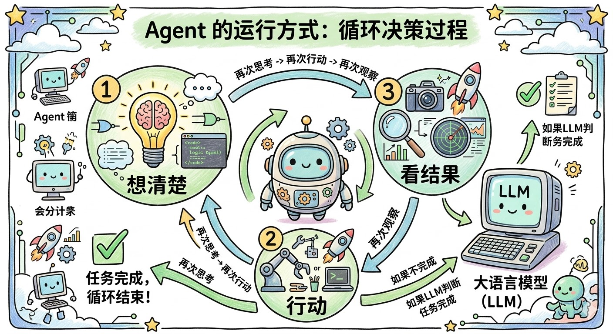
用代码来看这个循环是什么样的：
import anthropic
client = anthropic.Anthropic()
def run_agent(user_goal: str):
# 把用户目标放进对话历史，Agent 的所有思考和行动都在这个 messages 里积累
messages = [{"role": "user", "content": user_goal}]
# Agent 的核心：一个不断循环的决策过程
# 注意：开发者根本不知道这个循环会跑几次，完全由 LLM 自己决定
while True:
# 每一轮，LLM 看到当前的完整对话历史，自己判断下一步该做什么
response = client.messages.create(
model="claude-opus-4-6",
max_tokens=1024,
tools=tools, # 把「工具说明书」传给 LLM，让它知道自己有哪些能力
messages=messages
)
# LLM 告诉我们「任务完成了」，把最终答案返回出去，循环结束
if response.stop_reason == "end_turn":
return response.content[0].text
# LLM 认为还需要调工具，我们就真正去执行它指定的工具
# 注意：LLM 只是「告诉我们调哪个工具、传什么参数」，真正执行的是我们的代码
tool_use = next(b for b in response.content if b.type == "tool_use")
tool_result = execute_tool(tool_use.name, tool_use.input)
# 把工具的执行结果塞回对话历史，LLM 下一轮能看到这个结果，再接着决策
messages.append({"role": "assistant", "content": response.content})
messages.append({
"role": "user",
"content": [{"type": "tool_result", "tool_use_id": tool_use.id, "content": tool_result}]
})
# 回到循环顶部，LLM 再看一遍现在的状态，做下一步决策
这段代码里有一个地方值得特别注意：这个 while True 循环会跑几次，开发者完全不知道，也不需要知道，这正是 Agent 和普通代码最不一样的地方。普通代码的每一步都是开发者预先写好的，但 Agent 的执行路径是 LLM 实时决定的，你可以让它完成复杂的、你事先根本没法预测路径的任务。
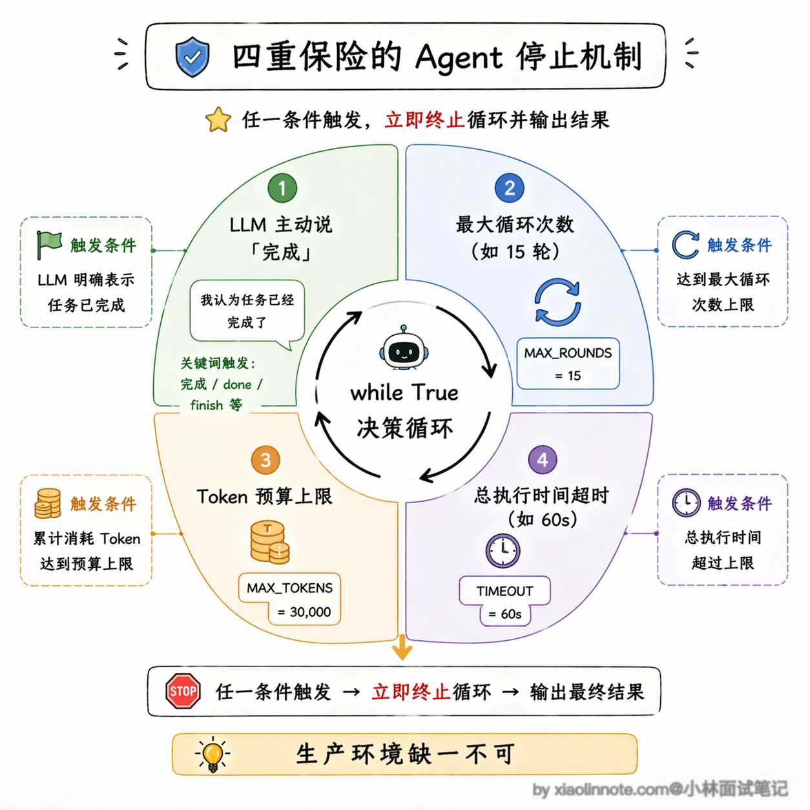
但你可能马上会想到一个问题：既然循环是 while True，那万一 LLM 一直觉得任务没完成，或者陷入了某种死循环怎么办？
这是一个非常实际的工程问题，也就是所谓的「停止条件」（Stop Condition）。在生产环境里，一个成熟的 Agent 系统必须有明确的停止机制，不能让它无限跑下去。
常见的停止条件有这几种：第一种是 LLM 主动判断任务完成，这是最理想的情况，模型自己觉得目标已经达成了，输出最终答案；第二种是设置最大循环次数，比如最多跑 15 轮，超过了不管任务有没有完成都强制停下来，返回当前已有的结果并告知用户；第三种是设置总 token 预算上限，一旦消耗的 token 接近预算就停止，防止成本失控；第四种是超时机制，整个 Agent 运行时间超过比如 60 秒就终止。实际工程里这几种机制通常是同时存在的，哪个先触发就用哪个，这样才能确保 Agent 不会变成一个「失控的无限循环」。
当然，Agent 还有另一个副作用：行为是不确定的。
同样的任务，今天跑和明天跑，可能调了不同的工具、走了不同的路径，甚至得到微妙不同的结果。这是因为 LLM 本质上是个概率模型，每次生成都带有随机性。灵活性和不确定性是一对孪生兄弟，有 Agent 的灵活，就必然伴随着一定程度的不可预测。
这个不确定性在生产环境里有多现实呢？
举个具体的例子，你让 Agent 帮你做竞品调研，第一次跑的时候它可能先搜索了竞品 A 再搜竞品 B，然后做了对比分析；第二次跑同样的任务，它可能先搜了竞品 B 的最新融资新闻，然后跑去搜了行业报告，最后才回来看竞品 A。
两次的最终报告质量可能都还行，但中间走的路径完全不同，这就导致了一个问题：如果某次跑出来的结果有错，你很难复现它当时的执行路径来排查问题。
所以在生产环境里，很多团队会给 Agent 加上详细的执行日志，记录每一步的思考过程和工具调用结果，方便事后追溯。
第三层：Workflow，把所有人组织起来的总指挥
理解了 Tools 和 Agent 之后，Workflow 就水到渠成了。
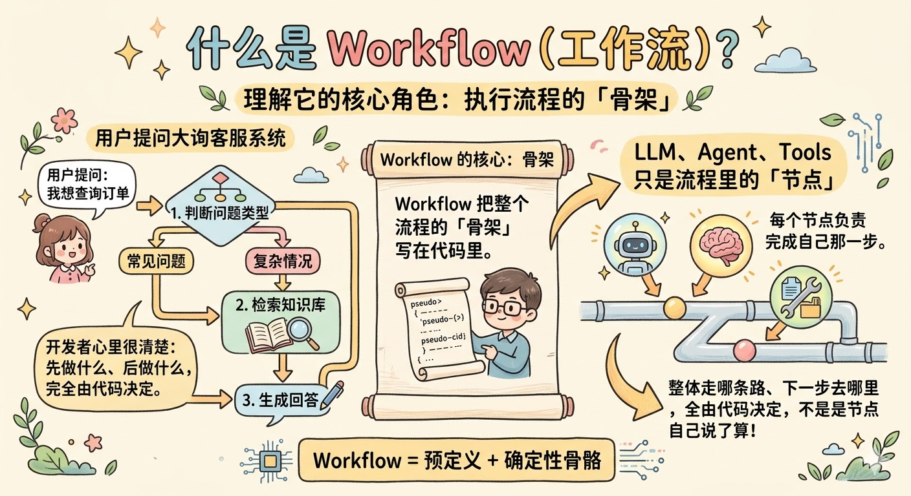
假设你现在要做一个客服系统，大致流程是：先判断用户问的是什么类型的问题，再去知识库里检索相关内容，最后生成一个回答。这里面每一步的逻辑，开发者其实心里都很清楚，先做什么、后做什么、结果满足什么条件走哪个分支，完全可以在代码里写死。
这就是 Workflow 做的事：把整个执行流程的「骨架」写在代码里，LLM、Agent、Tools 都只是这个流程里的「节点」，每个节点负责完成自己那一步，但整体走哪条路、下一步去哪里，全由开发者的代码决定，不是任何节点自己说了算。
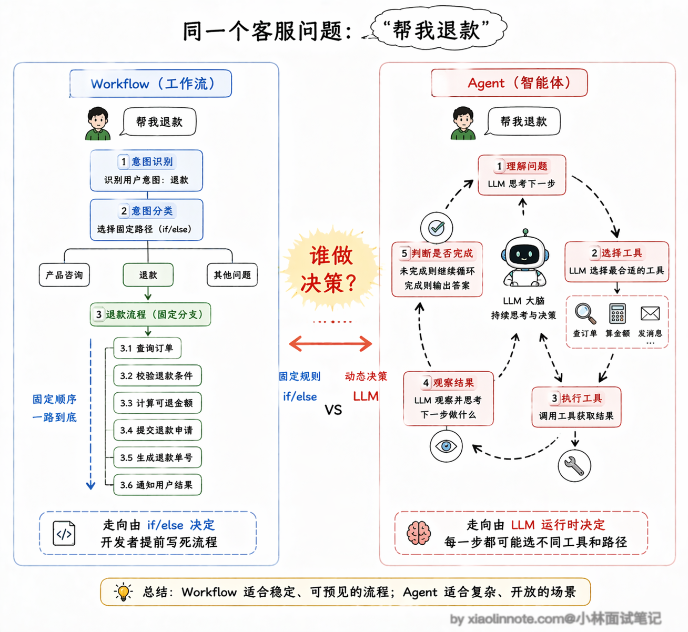
来看一个具体的例子：
def run_customer_service_workflow(user_query: str) -> str:
# ---- 第一步：意图识别 ----
# 这里把 LLM 当成一个分类器来用，它只负责判断这个问题属于哪个类别
# 「下一步去哪」这个决策是下面的 if/elif 来做的，不是 LLM 自己决定的
intent = classify_intent_with_llm(user_query) # 返回 "product" / "refund" / "other"
# ---- 第二步：根据意图走不同分支 ----
# 注意：这个分支判断是开发者写的 Python 代码，不是 LLM 的决策
if intent == "product":
# 产品问题：去知识库检索，再生成回答
docs = search_knowledge_base(user_query) # 直接调 Tool，固定的检索步骤
answer = generate_answer_with_llm(user_query, docs) # LLM 作为节点生成回答
return answer
elif intent == "refund":
# 退款问题：查订单系统，再走审核流程
order_info = query_order_system(user_query) # 调 Tool 查订单
if order_info["eligible"]:
process_refund(order_info["order_id"]) # 调 Tool 处理退款
return "退款已受理，预计 3 个工作日到账"
else:
return "很抱歉，该订单不满足退款条件"
else:
# 其他问题：转人工
escalate_to_human_agent(user_query)
return "已为您转接人工客服，请稍候"
# 整个流程的走向在代码里一目了然
# 出了任何问题，你可以精确定位是哪一步出了错
你看，LLM 在这里面出现了两次，一次是做意图分类，一次是生成回答，但它只是流程里的两个工位，「接下来去哪」这件事完全由 if/elif 这些普通 Python 代码控制。
这就是 Workflow 和 Agent 最核心的区别：谁在做「下一步去哪」这个决策？Agent 是 LLM 自己决定，Workflow 是开发者在代码里写死。
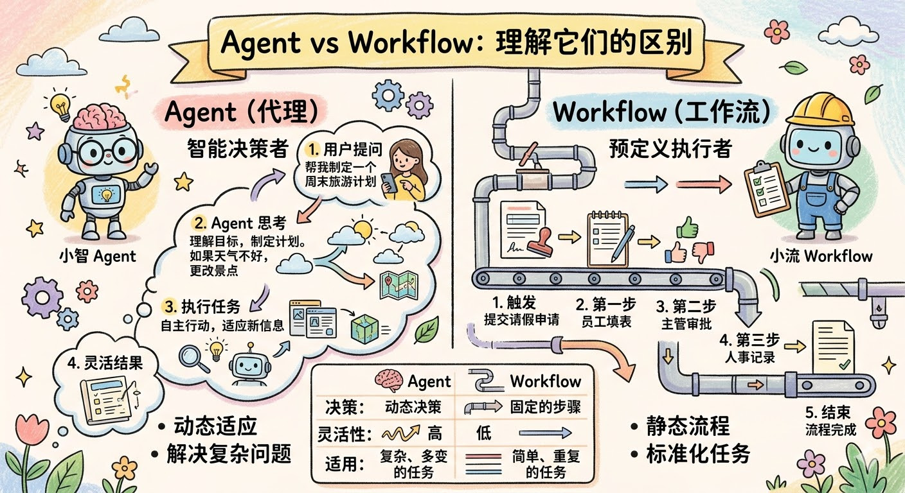
Workflow 最大的优点是可预测、可控、好调试。你在代码里看到什么，它就做什么，不会有任何「惊喜」。生产环境里出了问题，你可以打断点逐步追，精确定位是哪个节点出了故障。这种确定性在线上系统里非常珍贵。
三者怎么组合？Agentic Workflow 才是生产主流
讲完了三层结构，我们来说说实际工程里怎么用。
很多人学完这三个概念之后，会自然而然地想：「那我应该用哪个？」这个问题本身就有点问错方向了，因为在真实的项目里，三者通常是同时存在、相互嵌套的：
完全靠 Agent 自主决策 的系统其实很少在生产环境里出现，原因很现实：行为太难控制，一旦出问题很难排查，成本也容易失控（LLM 调太多轮）。
完全靠 Workflow 写死 的系统又太脆，因为你没法把所有情况都穷举到代码里，遇到预料之外的输入就容易失败或者给出很差的结果。
所以目前生产环境里最主流的模式是「Agentic Workflow」：用 Workflow 固定主流程的骨架，在需要灵活判断的节点嵌入 Agent，其余固定节点直接用 LLM 或 Tools。 骨架是确定的，让你能控制整体行为、便于调试；关键节点是灵活的，让你能应对各种复杂情况。两个优点都有，两个缺点都被削弱了。
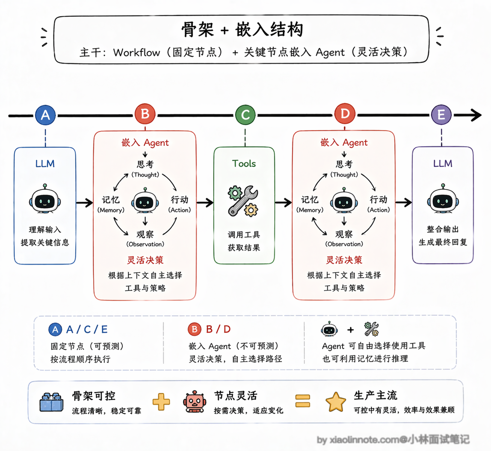
Anthropic 在他们的 Agent 工程实践中总结了几种常见的 Workflow 编排模式，值得了解一下。
- 第一种叫「Prompt Chaining」（提示链），就是把一个大任务拆成多个小步骤，前一步的输出作为后一步的输入，像流水线一样串起来。
- 第二种叫「Routing」（路由），先用一个 LLM 做分类判断，然后根据分类结果把请求分发到不同的处理分支，前面客服系统的例子就是典型的路由模式。
- 第三种叫「Parallelization」（并行化），把可以同时进行的子任务并行执行，最后汇总结果，这在需要多维度分析的场景下特别有用，比如同时从多个数据源检索信息。
- 第四种叫「Orchestrator-Workers」（编排者-工人），一个中央编排者负责分配任务，多个 Worker 各自完成子任务，适合任务可以分解但子任务之间相互独立的场景。
还有一种非常实用但经常被忽略的模式叫「Evaluator-Optimizer」（评估者-优化者）。
它的核心思路是：一个 LLM 负责生成输出，另一个 LLM（或者同一个模型换一个角色）负责评估这个输出的质量，如果评估不通过就把反馈给回生成者，让它改进后重新输出，如此循环直到评估通过或者达到最大重试次数。
这个模式特别适合对输出质量要求很高的场景，比如生成营销文案、撰写法律条款、编写代码等等。它的本质其实就是把「人类审稿-修改」的过程自动化了，用 LLM 来充当那个「审稿人」。不过要注意的是，评估标准必须在代码里定义清楚（比如用一个打分函数来判断是否通过），不能让评估者自由发挥，否则评估本身的质量也不可控。
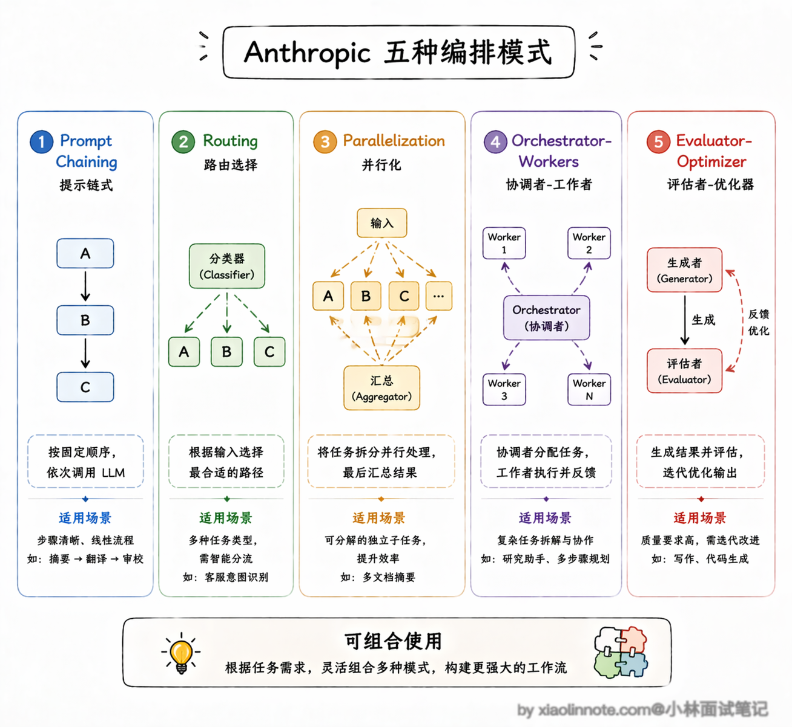
这几种模式不是互斥的，实际项目里经常是混合使用，根据具体需求组合出最合适的架构。
从性能和成本角度看，Workflow 模式的优势也很明显。纯 Agent 模式下，一个复杂任务可能需要 LLM 跑十几轮甚至几十轮决策循环，每轮都要把完整的上下文发给模型，token 消耗是线性增长的，延迟也会累积。
而 Workflow 模式因为流程是固定的，你可以精确控制每个节点的 token 预算，不需要的上下文不传，该并行的步骤并行执行，整体的延迟和成本都更可控。这也是为什么很多团队在从原型阶段（用纯 Agent 快速验证想法）过渡到生产阶段时，都会把系统重构成 Agentic Workflow 的架构。
把三者的核心差异对照起来看，就很清楚了：
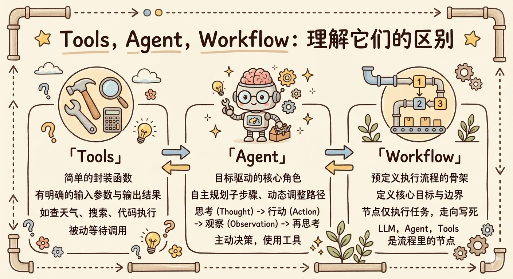
| 维度 | Tools | Agent | Workflow |
|---|---|---|---|
| 决策能力 | 无（只执行，不决策） | 有（LLM 自主动态决策） | 无（开发者在代码里写死） |
| 执行方式 | 被动，等待被调用 | 主动，自主循环直到完成 | 按开发者定义的顺序执行 |
| 确定性 | 高（输入固定则输出固定） | 低（同输入可能走不同路径） | 高（行为完全可预测） |
| 灵活性 | 只做一件事 | 高（能应对预料之外的情况） | 低（流程提前写死，难以动态调整） |
| 调试难度 | 容易（单一函数） | 难（执行路径不确定） | 容易（链路清晰，可逐步追踪） |
| 适用场景 | 封装单一具体能力 | 路径未知的复杂任务 | 流程相对固定的业务系统 |
🎯 面试总结
开头对话里最典型的误区是把 Workflow 理解成「多个 Agent 串联」，这个说法不对，Workflow 的节点可以是任意的 LLM 调用、Tools 或 Agent，关键不是节点类型，而是控制流由谁掌握——Workflow 是开发者在代码里写死的 if/else，Agent 是 LLM 动态决定的。
面试时答这道题，要抓住「谁做决策」这个核心角度：Tools 没有决策能力，只负责被调用时执行；Agent 由 LLM 在运行时动态决策，同样的输入可能走不同路径；Workflow 的决策提前写死在代码里，行为完全可预测。
三者不是三选一的关系，而是可以相互嵌套的，面试时还要补一句：生产环境里最主流的不是纯 Agent，而是 Agentic Workflow，用 Workflow 固定主流程骨架，在需要灵活判断的节点嵌入 Agent，这样兼顾了可控性和灵活性。